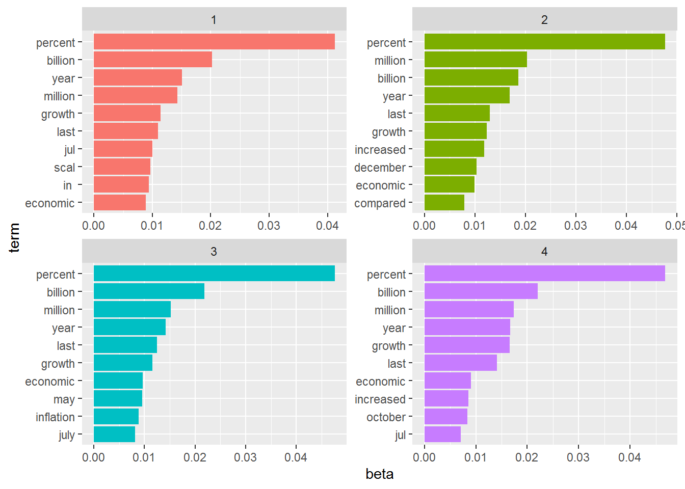
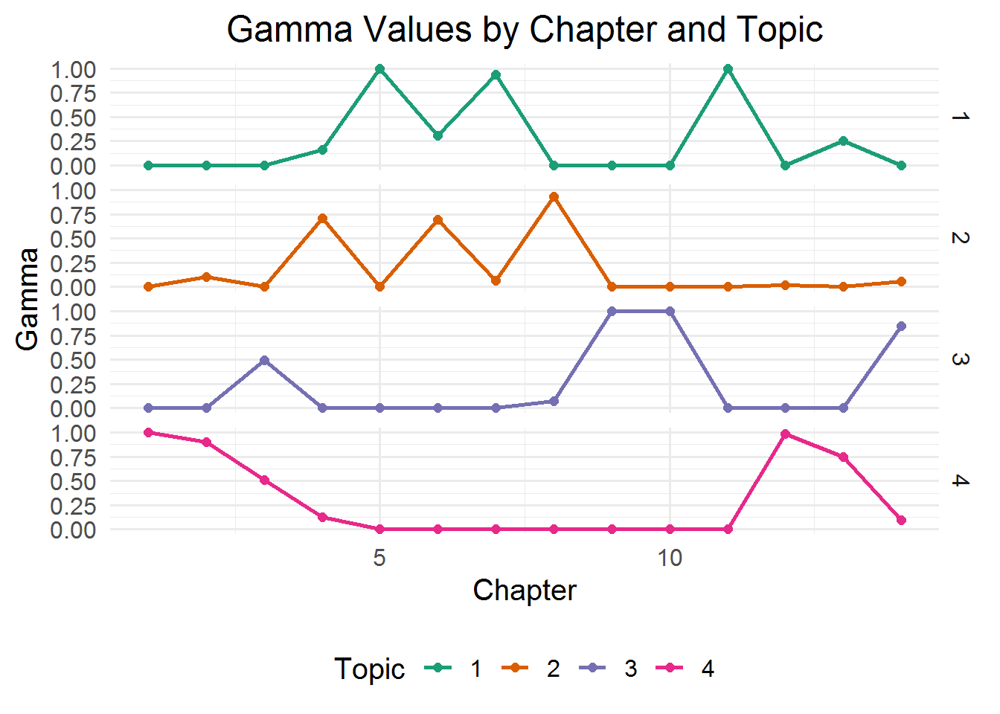

library(tm)
library(NLP)
library(SnowballC)
library(wordcloud)
library(RColorBrewer)
library(syuzhet)
library(ggplot2)
library(stringr)
library(tidyverse)
library(tidytext)
library(topicmodels)
library(tidyr)
library(dplyr)
library(slam)
library(text)
library(glmnet)
library(caret)
library(e1071)
library(igraph)
library(ggraph)
library(visNetwork)
library(LDAvis)
library(textmineR)
library(stringi)
library(pdftools)
library(rvest)Topic_Modeling
Loading Libraries
Loading Files
folder <- "C:\\Users\\Pc\\OneDrive - Higher Education Commission\\text_data_analysis\\economic_updates_2023_24"
folder[1] "C:\\Users\\Pc\\OneDrive - Higher Education Commission\\text_data_analysis\\economic_updates_2023_24"#Reading Files from Folder
filelist <- list.files(path = folder)
filelist <- paste(folder, "\\" ,filelist, sep="")
typeof(filelist)[1] "character"corpus
a <- lapply(filelist, FUN = readLines) # for readin line
corpus <- lapply(a, FUN = paste, collapse= " ")PreProcessing
corpus2 <-gsub(pattern = "\\W", replace= " ",corpus) # to get rid of puntuations ,dots ets
corpus2 <-gsub(pattern = "\\d", replace= " ",corpus2) # for digits
corpus2 <- tolower(corpus2)
# stopwords
corpus2 <- removeWords(corpus2, stopwords("english"))
# naw we remove single later words like in document when view , there is alot of c d like words
corpus2 <- gsub(pattern = "\\b[A-z]\\b[1]", replace= " ",corpus2)
#naw geting rid of white spaces
corpus2 <- stripWhitespace(corpus2)1.Topic_model
1.1 Creating document Term matrix
DTM <- DocumentTermMatrix(corpus2)1.2 Create Model with 4 Topics
Model_lda <- LDA(DTM, k=4,control = list(seed = 1234))
Model_ldaA LDA_VEM topic model with 4 topics.1.3 Probability of word being associated to a topic
beta_topics <- tidy(Model_lda, matrix = "beta") # creat the beta model
beta_topics %>% head(20)# show all the information in beta topic# A tibble: 20 x 3
topic term beta
<int> <chr> <dbl>
1 1 account 4.04e- 3
2 2 account 2.69e- 3
3 3 account 4.76e- 3
4 4 account 2.43e- 3
5 1 agriculture 2.43e- 3
6 2 agriculture 3.44e- 3
7 3 agriculture 3.17e- 3
8 4 agriculture 3.64e- 3
9 1 ances 3.52e- 4
10 2 ances 3.33e- 4
11 3 ances 3.73e- 4
12 4 ances 4.88e- 4
13 1 apr 4.42e-214
14 2 apr 3.84e-205
15 3 apr 1.22e- 3
16 4 apr 3.22e- 4
17 1 april 2.70e- 4
18 2 april 5.45e- 5
19 3 april 1.23e- 3
20 4 april 3.41e- 31.4 Grouping the terms by topic
beta_top_terms <- beta_topics %>%
group_by(topic) %>%
slice_max(beta, n = 10) %>%
ungroup() %>%
arrange(topic, -beta)
beta_top_terms %>% head(10)# A tibble: 10 x 3
topic term beta
<int> <chr> <dbl>
1 1 "percent" 0.0412
2 1 "billion" 0.0202
3 1 "year" 0.0151
4 1 "million" 0.0143
5 1 "growth" 0.0114
6 1 "last" 0.0109
7 1 "jul" 0.0100
8 1 "scal" 0.00971
9 1 "in\xef" 0.00942
10 1 "economic" 0.008881.5 Display the grouped terms on the charts
[1] TRUEbeta_top_terms %>%
mutate(term = reorder_within(term, beta, topic)) %>%
ggplot(aes(beta, term, fill = factor(topic))) +
geom_col(show.legend = FALSE) +
facet_wrap(~ topic, scales = "free") +
scale_y_reordered()
1.6 Filtering terms by Topics
tidy(DTM) %>%
filter(document == 3) %>%
arrange(desc(count))# A tibble: 847 x 3
document term count
<chr> <chr> <dbl>
1 3 percent 117
2 3 billion 55
3 3 july 52
4 3 million 45
5 3 growth 37
6 3 year 29
7 3 last 24
8 3 economic 21
9 3 increased 20
10 3 august 18
# i 837 more rows1.7 Examining per document per topic probabilities
gamma_documents <- tidy(Model_lda, matrix = "gamma")
gamma_documents %>% head(20)# A tibble: 20 x 3
document topic gamma
<chr> <int> <dbl>
1 1 1 0.000513
2 2 1 0.0000156
3 3 1 0.0000182
4 4 1 0.165
5 5 1 1.00
6 6 1 0.307
7 7 1 0.938
8 8 1 0.0000159
9 9 1 0.0000172
10 10 1 0.0000152
11 11 1 1.00
12 12 1 0.0000155
13 13 1 0.255
14 14 1 0.0000162
15 1 2 0.000513
16 2 2 0.102
17 3 2 0.0000182
18 4 2 0.710
19 5 2 0.0000162
20 6 2 0.693 1.8 Create a data frame with gamma results
doc_gamma.df <- data.frame(gamma_documents)
doc_gamma.df$chapter <- rep(1: dim(DTM)[1],4)1.9 plotting gamma results
ggplot(data = doc_gamma.df, aes(x = chapter, y = gamma,
group = factor(topic), colour = factor(topic))) +
geom_line(size = 1) + # Line thickness
geom_point(size = 2) + # Points on the lines
facet_grid(rows = vars(factor(topic))) + # Facet grid for better layout control
scale_colour_brewer(palette = "Dark2") + # Custom color palette
theme_minimal(base_size = 15) + # Minimal theme for a clean look
labs(title = "Gamma Values by Chapter and Topic",
x = "Chapter",
y = "Gamma",
colour = "Topic") + # Titles and labels
theme(legend.position = "bottom", # Move legend to the bottom
plot.title = element_text(hjust = 0.5)) # Center align the title